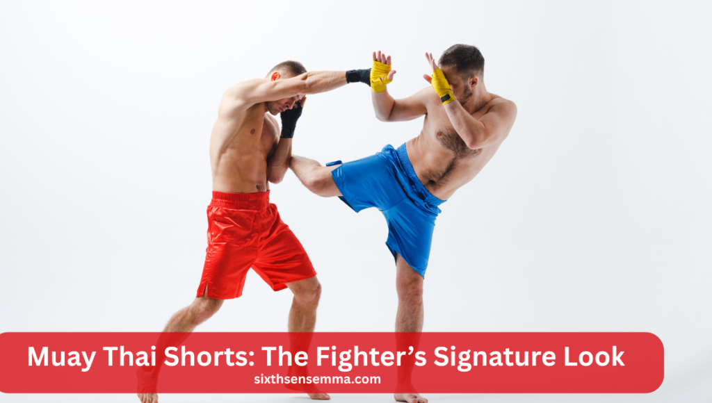
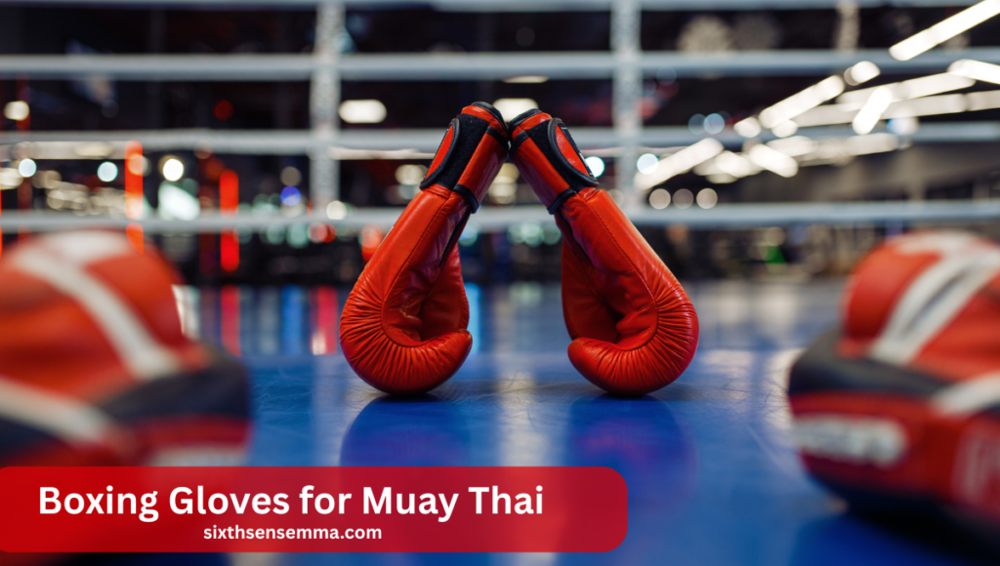
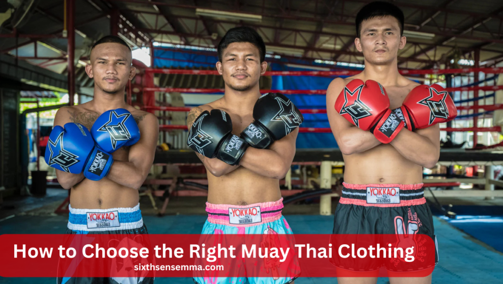

Muay Thai Clothing: Clothes, Style Ideas & Safety Tips

Muay Thai clothing is more than just workout gear—it’s a key part of how fighters train, move, and stay safe. Whether you’re hitting pads, sparring, or just starting out, the right clothes help you stay comfortable and protected. Muay Thai gear is designed for tough training, fast movement, and heavy sweat, which regular gym clothes can’t handle.
Why is Muay Thai clothing important for training?
Muay Thai clothing is made to support fast moves, heavy sweating, and strong kicks. It keeps you safe, helps you move freely, and prevents injuries. Wearing the right gear also makes training more comfortable and helps you perform better in every session.
What is Muay Thai Clothing?
Muay Thai clothing is the gear worn by fighters during training or matches. It includes shorts, gloves, hand wraps, tops, shin guards, and ankle supports. Each piece is designed to support fast, powerful moves. This clothing helps fighters stay cool, flexible, and safe during intense sessions.
Importance of Using Sport-Specific Clothing
Wearing clothing made for Muay Thai gives fighters a big advantage. The gear is built to handle heavy sweat, strong movement, and high heat. It also lowers injury risks by giving support and freedom of motion. Ordinary workout clothes can’t offer the same level of safety or comfort.
Why Clothing Matters in Muay Thai Training
In Muay Thai, clothing is more than just what you wear. It plays a big role in how well you train and how safe you are. The right gear helps you move better, avoid injuries, and perform at your best. Let’s look at how proper clothing makes a big difference.
Role of Proper Attire in Movement and Safety
Good clothing helps you move better and stay safe. In Muay Thai, fighters need to kick, punch, and twist fast. Tight or loose clothes can get in the way or even cause falls. Gear made for Muay Thai fits well and protects key parts of the body.
Performance and Injury Prevention
High-quality training gear improves your performance and keeps you protected. Breathable fabrics keep your body cool during hard sessions. Pads and wraps guard joints and muscles. With the right gear, you can train harder and reduce the risk of sprains, bruises, or serious injuries.
Also Read Our Article: Best Martial Arts for Self-Defense: Which Style Suits You?
Muay Thai Shorts: The Fighter’s Signature Look
Muay Thai shorts are a key part of a fighter’s outfit. They are short and loose, made for comfort and movement. Their bold designs and bright colors also show off a fighter’s style and background. These shorts are both functional and full of tradition.
Short Design, Wide Leg Openings for Kicking
Compared to standard gym shorts, Muay Thai shorts are broader and shorter. The design allows for easy kicks and movement. They don’t stick to your legs or limit your range. This open cut helps you throw high kicks and knees with ease.
Thai Script, Logos, and Cultural Styling
These shorts often have Thai letters, gym logos, or symbolic designs. Many fighters pick bold colors or patterns to show their personality and fighting style. The cultural components also pay homage to Muay Thai’s Thai origins.
Types of Muay Thai Shorts
There are different styles of shorts for different tastes and needs. Some fighters like the old-school look, while others want a modern edge. Let’s break down the most common types of Muay Thai shorts.
Traditional vs. Modern Shorts
Traditional shorts have a wide, boxy look with Thai symbols. Modern shorts may be slimmer or influenced by MMA styles. Both types are popular today. It often comes down to comfort and the gym’s dress code.
Slim-Cut, Retro-Style, and Custom Options
Fighters now choose from slim-fit, retro, or even custom-made shorts. You can add your name, gym patch, or favorite colors for a personal touch. Custom gear helps fighters feel unique and boosts confidence in training or competition.
Muay Thai Training Tops and Compression Gear
Though Muay Thai is often trained shirtless, many fighters wear tops during certain sessions. Training tops offer protection, better hygiene, and comfort. Compression gear like rash guards also supports muscles and improves sweat control.
Rash Guards, Tank Tops, and Tees
While Muay Thai is often practiced shirtless, many wear tank tops, rash guards, or athletic tees. These tops reduce skin burns and manage sweat. Rash guards are tight and help with muscle support.
When and Why They’re Used
Tops are useful in clinch training and pad work. Rash guards offer compression, muscle support, and better hygiene in shared gym spaces. They also help reduce mat burns and skin infections.
Hand Wraps: Small But Essential
Hand wraps are a small but very important part of your Muay Thai gear. When you punch, they shield your hands and wrists. Wraps give support and help you avoid injuries. They also help you punch better and feel more confident.
Protecting Wrists, Knuckles, and Joints
Hand wraps protect your hands from injury during training. They provide support for the wrist and keep knuckles from getting hurt during punches. They also reduce the risk of broken fingers or sprains.
Length, Materials, and Wrapping Tips
Wraps come in different lengths. Longer wraps offer more protection. Cotton wraps are most common. To ensure maximum safety, make sure you wrap properly.Ask your coach or watch a guide if you’re unsure how to wrap properly.
Boxing Gloves for Muay Thai

Gloves are one of the most important parts of your Muay Thai gear. They protect your hands and your partner during training or sparring. Good gloves help improve your form and protect your wrists.
Different Glove Weights and Purposes
Use lighter gloves (10-12 oz) for bag work and heavier ones (14-16 oz) for sparring. Muay Thai gloves are made to allow clinching and gripping. Pick the right weight based on your training style.
Tips for Beginners Choosing Gloves
Pick gloves with good wrist support and strong padding. Look for trusted Muay Thai clothing brands like Fairtex or Yokkao. Make sure they fit your hand snugly but not too tight.
Shin Guards for Sparring Protection
Shin guards are very important if you spar regularly. During training, they keep you and your buddy safe. Good shin guards allow you to train harder and safer.
Padding Types, Coverage, and Comfort
Shin guards are important for blocking kicks. They should have thick padding, strong straps, and cover the shin fully for best safety. Choose guards that stay in place without sliding.
Importance in Sparring Sessions
In sparring, shin guards prevent bruises and injuries. They let you train harder without harming yourself or your partner. Sparring without them can lead to painful shin clashes and long-term damage.
Ankle Supports and Foot Protection
Why This Matters: Ankle and foot protection are often overlooked in Muay Thai training. But fast footwork and repeated kicks put stress on your ankles. Using the right gear boosts balance and lowers injury risk.
Stability, Grip, and Joint Care
Ankle supports give stability during movement. They reduce joint pressure, prevent ankle sprains, and help you stay grounded during strikes. They also offer better grip on mats or floors, especially in sweaty conditions. Muay Thai clothing should always include this item for full-body safety and support during fast-paced drills.
Common Styles and Use Cases
Most ankle supports are stretchable, breathable sleeves made of cotton or elastic blends. They slide over your foot and cover the ankle. Some have padding or tighter compression. Fighters wear them in training and light sparring to prevent injury and help with smoother pivots, kicks, and footwork.
Muay Thai Clothing for Women
Why This Matters: Women need clothing designed to fit their body shapes without limiting their training. Today’s muay thai clothing brands offer quality gear tailored for female athletes, helping them train safely and comfortably.
Female-Specific Cuts and Designs
Muay Thai clothes for women are made with attention to fit, comfort, and function. Shorts come in tailored fits, while tops may include built-in bras or flexible fabric. These designs provide better support, letting women move freely. Quality muay thai clothing is all about giving every fighter what they need to perform.
Comfort and Fit During Training
Women usually train in sports bras, fitted tanks, or compression tops paired with Muay Thai shorts. These pieces stay in place during strikes or clinching and don’t restrict motion. Improved performance and focus are the results of a proper fit. The right training clothes boost comfort, which helps women train longer and safer.
Style Ideas for Muay Thai Fighters
Why This Matters: Muay Thai isn’t just about performance—it’s also about self-expression. Whether you prefer traditional Thai looks or modern MMA styles, your gear can reflect your identity and mindset.
Traditional Thai-Style Designs vs. Modern MMA Looks
Traditional Muay Thai shorts are flashy, colorful, and feature Thai script. They reflect Thai culture and spirit. In contrast, modern MMA-style shorts are simpler, with clean designs and tighter fits. Fighters choose between the two based on personal taste, function, and the image they want to present in the gym or ring.
Popular Colors and Symbolic Patterns
Muay Thai clothing often includes bold colors like red, blue, black, and gold. Patterns like dragons, flames, or tigers are popular symbols of strength, courage, and power. Gym logos or national flags also add personality. Fighters pick these visuals to stand out and show pride in their roots or training background.
Gender-Specific Style Choices
Men’s and women’s muay thai clothes may differ in fit and style. Women’s gear usually has a tighter cut, while men often wear looser shorts. Both focus on performance, comfort, and ease of movement. Gender-specific gear ensures fighters train confidently and don’t have to adjust their clothing mid-session.
Personalized or Branded Gear
Fighters often add their name, gym patch, or favorite phrase to their shorts. This gives the clothing a personal touch and can boost motivation. Many gyms also sell branded gear, creating a sense of team spirit. Customized muay thai clothes help fighters feel more connected to their journey and training family.
Also Read Our Article: Is Boxing A Martial Art? Comparing It to Other Martial Arts Forms
Safety Tips Related to Clothing
Why This Matters: Wearing the right muay thai clothing keeps you safe, comfortable, and clean during training. Good clothing helps you perform better while lowering the risk of injury, irritation, or infection.
Choosing Breathable, Sweat-Wicking Fabrics
Training in Muay Thai gets sweaty, so your clothes should breathe well. Look for moisture-wicking fabric that dries quickly. This prevents skin rashes, heat discomfort, and odors. Cotton blends, polyester mesh, or athletic fabrics work well.
Avoiding Restrictive or Loose Attire
Clothes that are too tight can block your movement, while baggy ones might get caught when kicking or clinching. Your muay thai clothing should feel secure but flexible. A good fit lets you move freely, practice safely, and avoid distractions during training. Always test your gear before hard sessions.
Proper Glove Fitting and Shin Guard Quality
Your gloves must fit your hands snugly, with proper wrist support. Loose gloves can injure your wrists or partner. Shin guards should cover your shins fully and stay in place during kicks. High-quality gear makes a big difference in protection, especially when sparring or drilling harder strikes.
Hygiene: Washing Gear Regularly
Dirty gear collects sweat, bacteria, and odors. Always wash your hand wraps, tops, and shorts after every session. Let gloves and shin guards air dry fully. Clean gear lasts longer and keeps you safe from infections or skin issues. Staying clean is just as important as technique in Muay Thai.
Training Barefoot: Risks and Tips
Muay Thai is usually trained barefoot to improve grip and power. But mats can carry bacteria or cause burns. Keep your feet clean and check the mat surface for rough spots. If needed, use foot grips or ankle wraps. Barefoot training is safe if you follow good hygiene and floor care.
Top Brands for Muay Thai Clothing
Why This Matters: Trusted brands offer quality, long-lasting muay thai clothing and gear. Whether you’re a beginner or advanced fighter, choosing from proven brands ensures comfort, safety, and style.
Fairtex
Fairtex is one of the oldest and most trusted names in Muay Thai. Known for making durable shorts, gloves, and pads, Fairtex is worn by top fighters worldwide. Their gear holds up well in tough training and has a traditional Thai look with modern performance.
Yokkao
Yokkao combines style and function. Their shorts and gloves come in bold colors and trendy designs. Yokkao gear is lightweight, breathable, and designed for top-level fighters. It’s a favorite in Thailand and across the world for people who want a modern, clean look with strong quality.
Twins Special
Twins Special is famous for reliable, everyday training gear. Their gloves and pads are used in many Thai gyms. Known for toughness and classic designs, Twins gear is great for beginners or pros. Their shorts also come in many styles and are built to last through hard sessions.
Top King
Top King makes stylish gear with strong protection. For sparring, their shin guards and gloves are particularly well-liked. The brand is known for creative patterns, solid construction, and comfort. Many fighters love Top King for the bold look and high durability in both training and competition.
Venum
Venum blends Muay Thai and MMA styles. Their gear looks sharp and fits great. Though not a Thai-based brand, Venum is worn by many fighters for its modern design and quality feel. It’s a solid option if you want muay thai clothing that’s tough, stylish, and easy to find worldwide.
How to Choose the Right Muay Thai Clothing

Why This Matters: Picking the right training gear means better performance, more comfort, and longer-lasting equipment. You don’t need the most expensive gear—just pieces that work for your body and training level.
Fit & Comfort
Always choose gear that fits your body well. Shorts should allow full kicks, and tops should not ride up or slip. Comfortable clothing helps you focus on training, not on fixing your outfit. A good fit also keeps your gear in place during clinches or pad work.
Material Durability
Muay Thai clothing should survive daily training, sweat, and hard kicks. Look for strong stitching, reinforced waistbands, and flexible but tough fabric. Good materials last longer, saving you money and frustration. Cheap gear may look nice, but it wears out fast under real gym use.
Gym or Competition Regulations
Some gyms and events have rules on what to wear. They might require certain colors, brands, or protective gear. Always ask before buying. Wearing the right clothing for your gym or a fight ensures you stay respectful and avoid penalties or problems on competition day.
Budget Considerations
Starting doesn’t have to cost a lot of money. Start with simple gloves, hand wraps, and shorts. As you train more, you can upgrade your gear based on needs. Choose quality over looks when on a budget. The best muay thai clothing gives you value, not just flashy designs.
Conclusion
Wearing the right Muay Thai clothing is important for every fighter. It keeps you safe, helps you move better, and boosts your performance. From gloves to shorts, each item supports your training. Don’t ignore comfort and fit—these small details make a big impact. Choose quality gear that matches your level, style, and needs, so you can train harder and smarter every day.
FAQ’s
For Muay Thai, you should wear proper shorts, a breathable top, hand wraps, and gloves. During sparring, shin guards and ankle supports are also important. Choose clothes that let you move freely and keep you cool during training.
Muay Thai fighters wear traditional shorts, gloves, hand wraps, and sometimes ankle supports. Depending on the session, some people also choose to go shirtless or wear a tank top. The clothing is made to allow powerful kicks, punches, and movement.
Yes, many gyms have a basic dress code that includes Muay Thai shorts, gloves, and wraps. Some may also require shin guards or a specific color for team training. It’s always best to ask your gym about their clothing rules.
Thai shorts can be expensive because of the quality material, handmade designs, and popular brand names. Many are made in Thailand with strong stitching and bold cultural artwork. Custom or limited-edition shorts usually cost more.
Yes, it’s totally fine to wear Muay Thai shorts if you are training or sparring. They are made for comfort, flexibility, and performance. Just make sure they fit well and follow any rules your gym may have.
The most expensive shorts ever sold are usually designer or athlete-worn pieces. In sport, signed or historic shorts often raise the price even more.
Train with us in Coppell
The first class is free. Shorts, a t-shirt and a water bottle. We lend the rest.
Book a free class